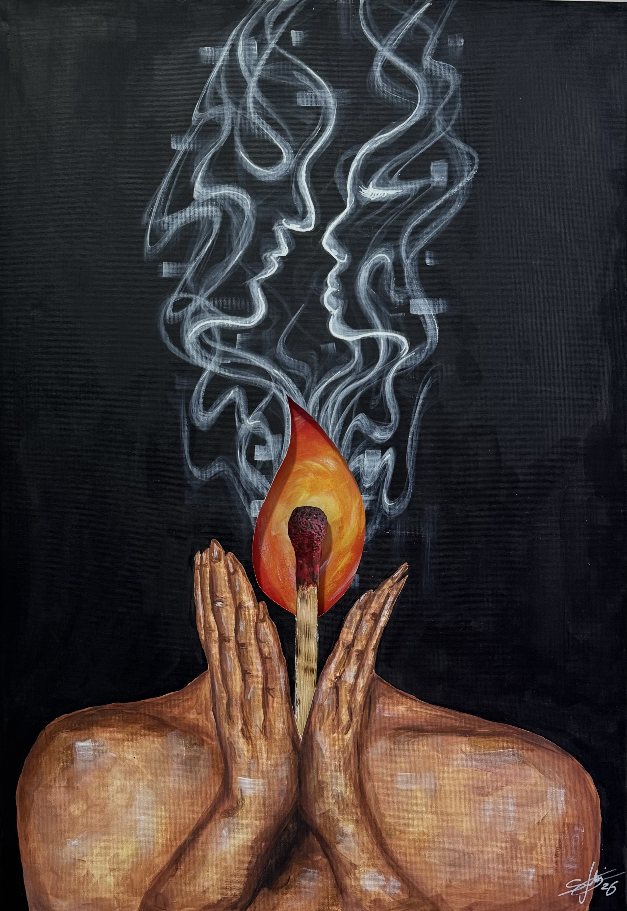
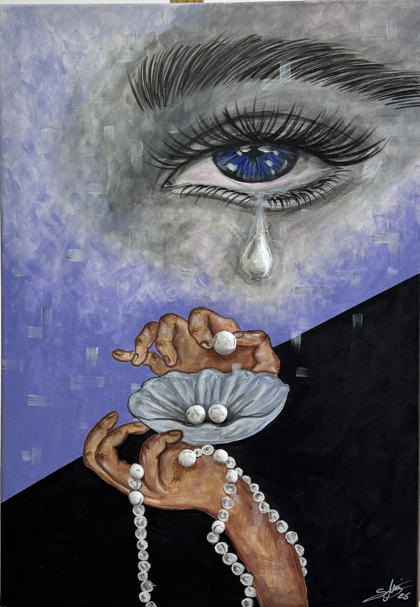
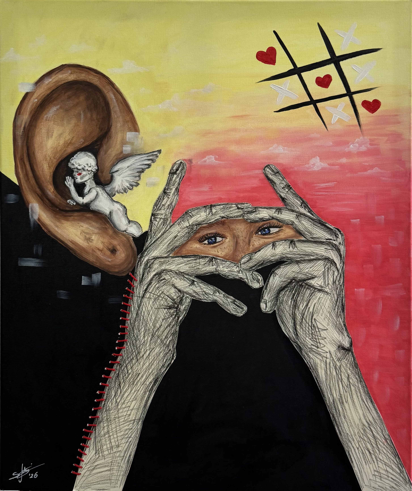
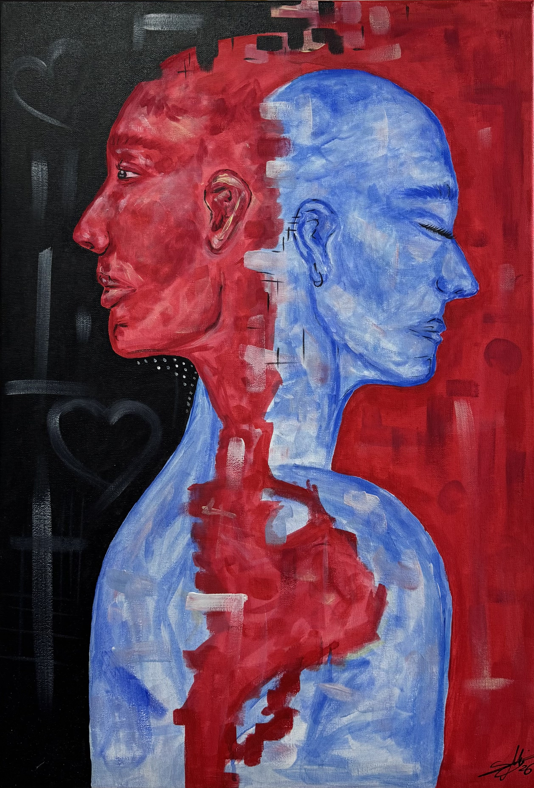
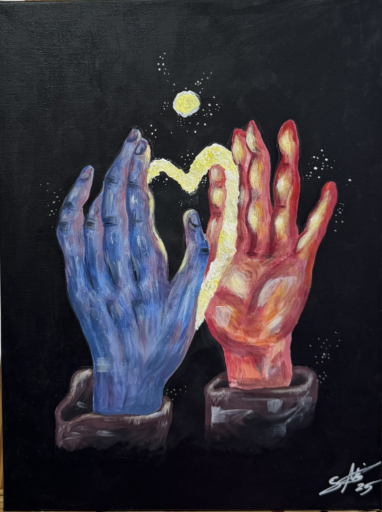
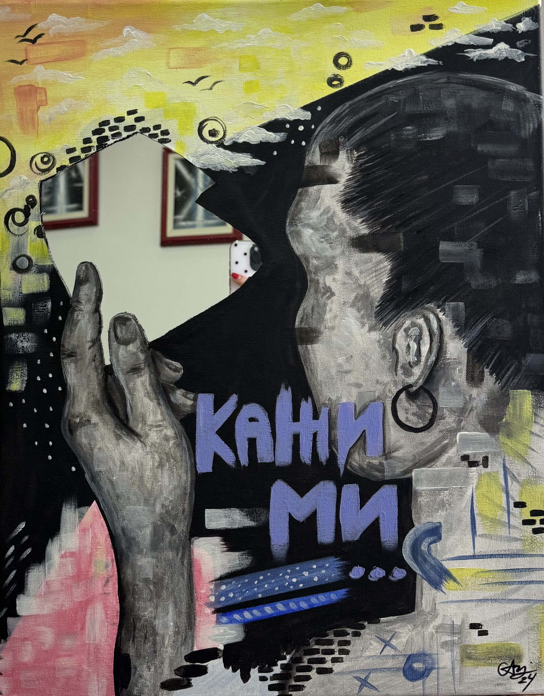
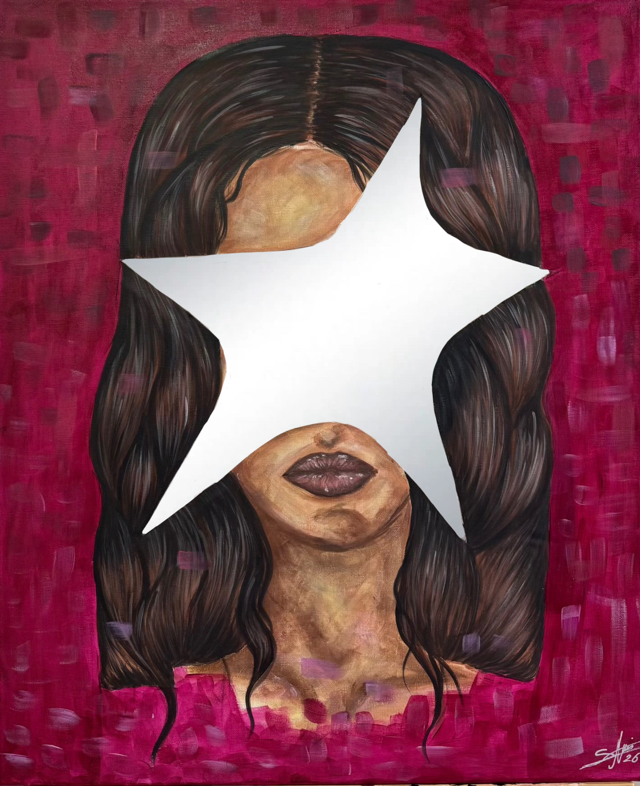
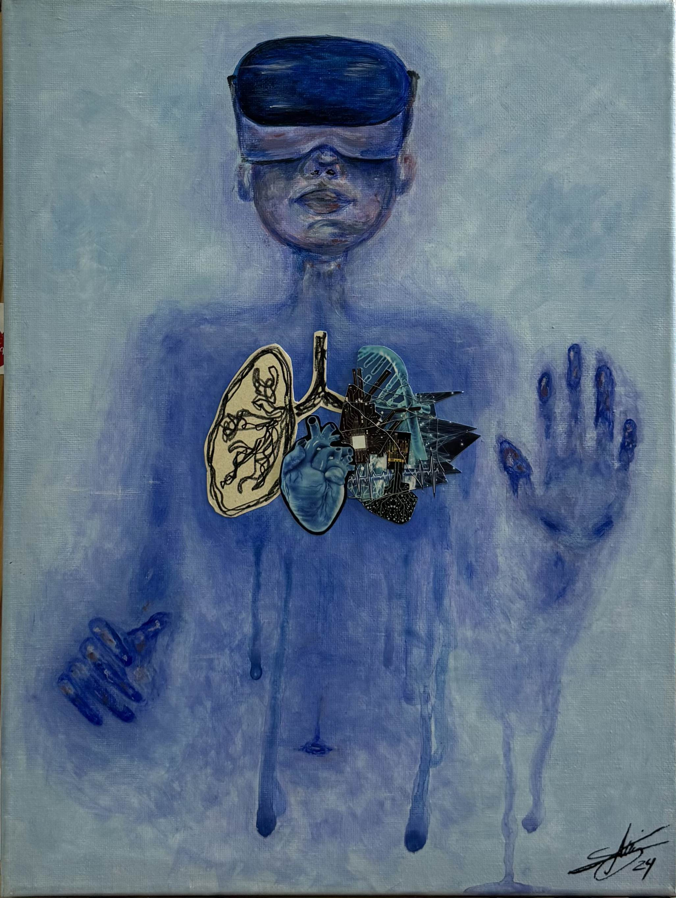
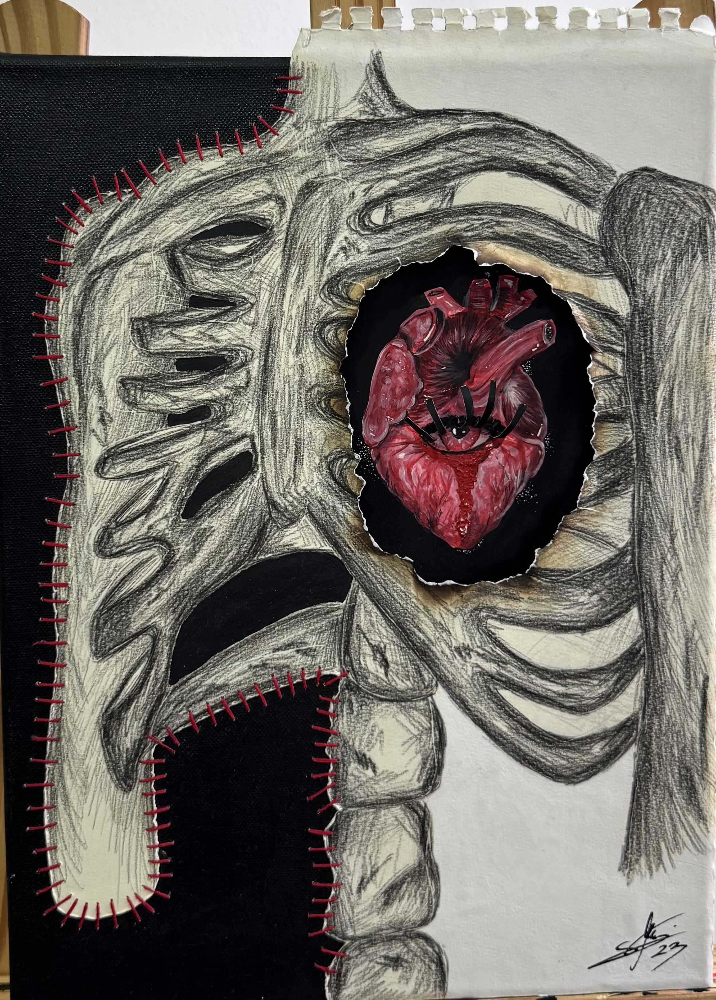
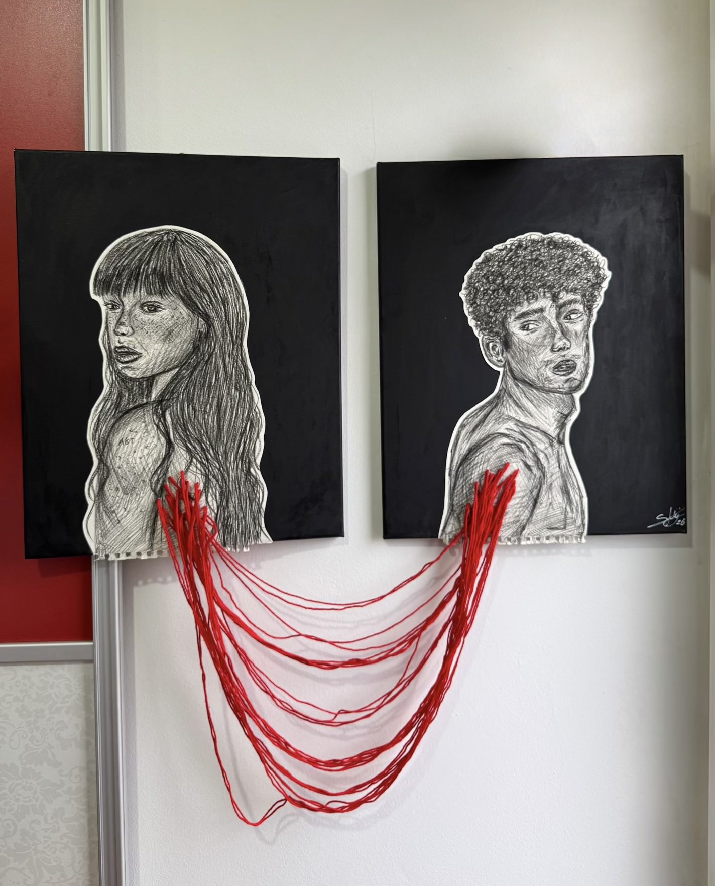

Solo exhibition - 2026
All Ten Works,
In Full
a collection born from years of inner growth, emotion, and self-discovery. Each artwork captures the moment when feelings become form, transforming silence into color, texture, and movement.
For me, art is not about providing answers but creating space for reflection - a dialogue between the self and the world. Impuls represents that quiet yet powerful instant when something deeply felt demands to be seen, inviting viewers to connect with their own emotions and interpretations.
The Gallery
Tap or click a piece to flip it - the back holds a short note on what it means.

Tap to readИскра меѓу нас
Mixed media, 2026
From the smoke, a love is born that settles within her mind. The smoke becomes a bridge between thought and heart, where dreams and reality dissolve into one another. Their silhouettes remain fragile and fleeting, like a feeling that exists only between a breath and its disappearance.

Tap to readКапка бисер
Mixed media, 2026
Rather than a sign of weakness, tears become an ornament - a symbol of resilience and endurance. From our most fragile moments, something precious a nd lasting is born. Hidden emotions transform the soul into a reflection of timeless beauty and love.

Tap to readШепот
Mixed media, 2026
Sometimes the most important truths are not seen but heard from within. Attention, tenderness, and quiet reflection can create a place of peace and light in the most intimate corners of ourselves.

Tap to readДвоен пулс
Acrylic on canvas, 2026
An eternal inner dialogue between reason and the heart. Their intertwining reveals that it is the tension between opposites that shapes who we are. One gaze is turned toward the world, the other inward - a portrait of the human condition.

Tap to readДопир
Acrylic on canvas, 2025
In the moment when two fingertips almost meet, a light is born, reminding us that true connection does not require perfection - it only asks for the courage to come closer. Touch is more than contact; it is a passage from darkness into a shared light.

Tap to readКажи ми
Mixed media, 2024
Strength and power already exist within me, and only I can set myself free. I must undergo a spiritual transformation, reconnect with myself, and awaken from within. Carrying the torch of awakening is not easy. It begins with learning to love myself, to feel alive again, and to see my own reflection through new eyes.

Tap to readТИ
Mixed media, 2026
The mirror reveals what words cannot. The face whispers while the reflection speaks, exposing both what the world longs to see and what exists beneath the surface. It is where the inner and outer selves finally meet.

Tap to readВдахнување
Mixed media, 2024
In our constant pursuit of something better, we often forget our health. It is only when we face serious illness that we begin to see technology as hope. The progress of modern medicine offers us a second chance at life. Through innovation, we are given the opportunity to breathe once more - the breath of a new morning.

Tap to readВресок
Mixed media, 2023
A silence that erupts from within—a scream that cannot be heard, yet can be deeply felt. The face struggles to contain the cry burning beneath the skin, capturing the moment when the heart is screaming but the voice remains silent. It reflects the frustration and sorrow we carry inside, unseen and unheard by the world.

Tap to read11:11
Mixed media, 2026
A moment when the universe aligns with the longing for two souls destined to meet. A delicate red thread illuminates the darkness, connecting two silhouettes - an invisible force guiding them toward one another. It is the point where time and destiny briefly touch.
In Conversation
Interviews, features, and write-ups on the exhibition and the work behind it.
Every Artwork Is a Window Into My Inner World
Vecer Press — March 2026Impulse - Solo Exhibition at Cultural & Social Space Centar Jadro
Centar Jadro - March 2026Student & Artist Sara Andonovska Presents Her First Solo Exhibition
SMART SDK - March 2026Impuls - Solo Exhibition Opening at Centar Jadro
Republika - March 2026From UX/UI Design to Fine Art - My Creative Journey
Skala Academy - March 2026Want to know more?